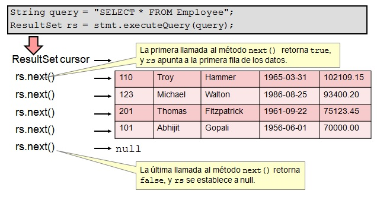

JDBC
Conexión a base de datos con Java
- Conectar a una fuente de datos, p.e. una base de datos
- Enviar sentencias de consulta y manipulación de datos a la base de datos
- Obtener y procesar los resultados recibidos de la base de datos en respuesta a una consulta.
Elementos principales
Todo driver JDBC debe implementar algunas clases para conectarse a una base de datos, ejecutar consultas y manipular datos
java.sql.Connection
Una conexión que representa la sesión entre la aplicación Java y la base de datos
Connection con = DriverManager.getConnection(url, username, password);java.sql.Statement
Objeto usado para ejecutar sentencias SQL estáticas y retornar el resultado
Statement stmt = con.createStatement();java.sql.ResultSet
Un objeto que representa un conjunto de resultados devuelto por la base de datos.
String query = "SELECT * FROM Employee";
ResultSet rs = stmt.executeQuery(query);
public void connectToAndQueryDatabase(String username, String password) {
Connection con = DriverManager.getConnection(
"jdbc:myDriver:myDatabase",
username,
password);
Statement stmt = con.createStatement();
ResultSet rs = stmt.executeQuery("SELECT a, b, c FROM Table1");
while (rs.next()) {
int x = rs.getInt("a");
String s = rs.getString("b");
float f = rs.getFloat("c");
}
con.close();
}| RDBMS | JDBC driver name | URL format |
|---|---|---|
| MySQL | com.mysql.jdbc.Driver | jdbc:mysql://hostname/ databaseName |
| ORACLE | oracle.jdbc.driver.OracleDriver | jdbc:oracle:thin:@hostname:port Number:databaseName |
| DB2 | COM.ibm.db2.jdbc.net.DB2Driver | jdbc:db2:hostname:port Number/databaseName |
| Sybase | com.sybase.jdbc.SybDriver | jdbc:sybase:Tds:hostname: port Number/databaseName |
Arquitectura JDBC

Usando un objeto ResultSet
Escribiendo Consultas y obteniendo resultados
Para ejecutar consultas SQL se debe crear un objeto que envuelva esa consulta, una instancia de Statement
Statement stmt = con.createStatement();Usamos la instancia de Statement para ejecutar la consulta.
ResultSet rs = stmt.executeQuery (query);Statement tiene 3 métodos para ejecutar las consultas SQL
| Método | Retorno | Usado para |
|---|---|---|
| executeQuery(sqlString) | ResultSet | Sentencias SELECT |
| executeUpdate(sqlString) | int (filas afectadas) | INSERT, UPDATE, DELETE, o cualquier DDL |
| execute(sqlString) | boolean (true si devuelve un ResultSet) | Cualquier sentencia SQL |
Transacciones
Preguntas

1. stmt.executeQuery(query);
2. stmt.executeUpdate(query);
3. stmt.executeQuery(query);
4. stmt.query(query);